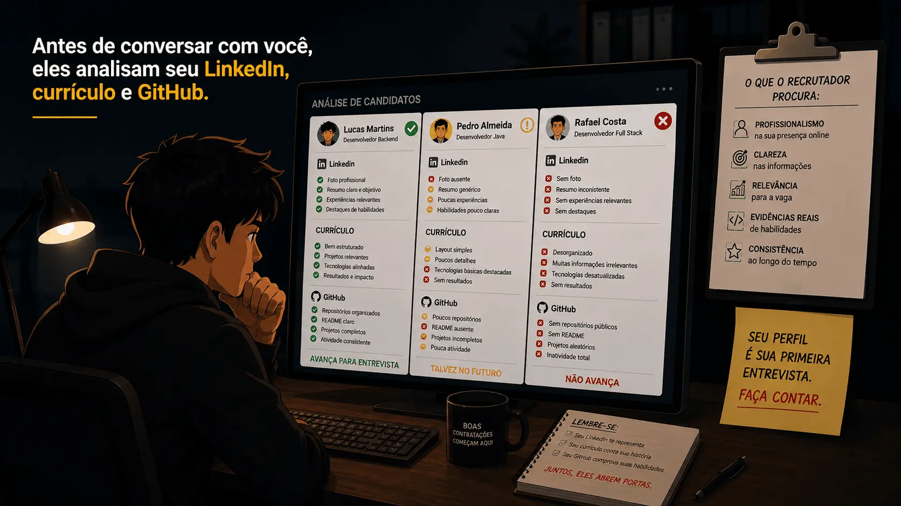
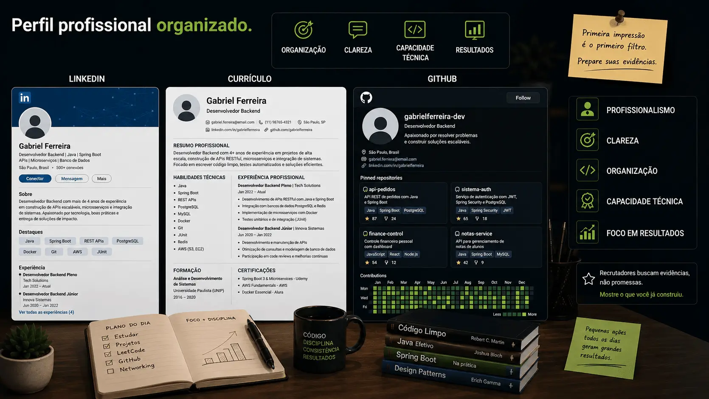
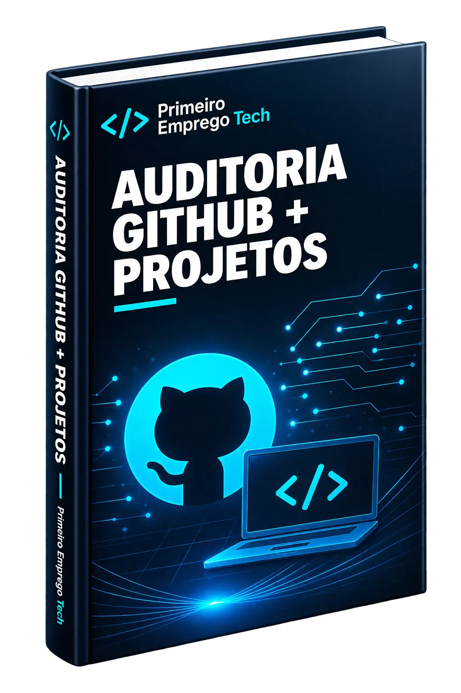

Você faz cursos, aprende novas tecnologias e cria pequenos projetos, mas ainda não consegue transformar esse conhecimento em entrevistas.
O problema não é falta de capacidade. É falta de evidências profissionais.
Descubra em poucos minutos por que alguns candidatos conseguem entrevistas mesmo sabendo menos tecnologia.
Milhares de pessoas passam meses consumindo cursos, assistindo aulas e fazendo exercícios. Mesmo assim continuam sendo ignoradas pelos recrutadores.
Você pode dominar várias linguagens de programação, mas se seu perfil não mostrar isso com clareza, o recrutador não vai notar.

Recrutadores olham seu perfil antes de te chamar. Se seu LinkedIn e GitHub não transmitirem profissionalismo, você perde a vaga.

Empresas buscam organização, clareza e capacidade técnica. É exatamente isso que seu LinkedIn, currículo e GitHub precisam demonstrar.
Seu LinkedIn passa a aparecer nas buscas certas, aumentando visitas no perfil e oportunidades.
Seu currículo é estruturado para ser lido corretamente pelos sistemas ATS, chegando até um recrutador.
Seu GitHub passa a demonstrar organização, projetos relevantes e boas práticas valorizadas pelo mercado.
Você entende como funcionam as entrevistas técnicas e responde com muito mais confiança.
O objetivo não é ensinar programação do zero.
O objetivo é transformar todo o conhecimento que você já possui em um perfil profissional que transmite credibilidade e aumenta suas chances de conquistar entrevistas.
Cada material foi criado para resolver uma etapa específica da sua preparação. Juntos, eles formam um sistema completo para transformar seus estudos em um perfil profissional muito mais competitivo.

Você não está comprando apenas alguns materiais. Está adquirindo um sistema completo para apresentar seu conhecimento da forma que o mercado espera.
Não são apenas PDFs. Você recebe materiais práticos, checklists, exemplos e modelos que podem ser aplicados imediatamente na construção do seu perfil profissional.
Você recebe um método completo para organizar seu LinkedIn, currículo, GitHub e preparação para entrevistas, criando uma imagem profissional muito mais forte para o mercado.
🔒 Acesso liberado imediatamente após a confirmação do pagamento • Garantia de 7 dias
Você pode conhecer todo o conteúdo com tranquilidade. Se perceber que o Primeiro Emprego Tech não faz sentido para você, devolvemos 100% do seu investimento.
Você tem sete dias para acessar os materiais, analisar cada guia, aplicar o método e decidir com calma.
Se concluir que o conteúdo não é para você, basta solicitar o reembolso dentro do prazo e devolveremos 100% do valor pago.
Essas são as perguntas que mais recebemos antes da compra.
O conhecimento técnico você já está adquirindo. Agora é hora de aprender a apresentá-lo da forma que o mercado realmente procura.